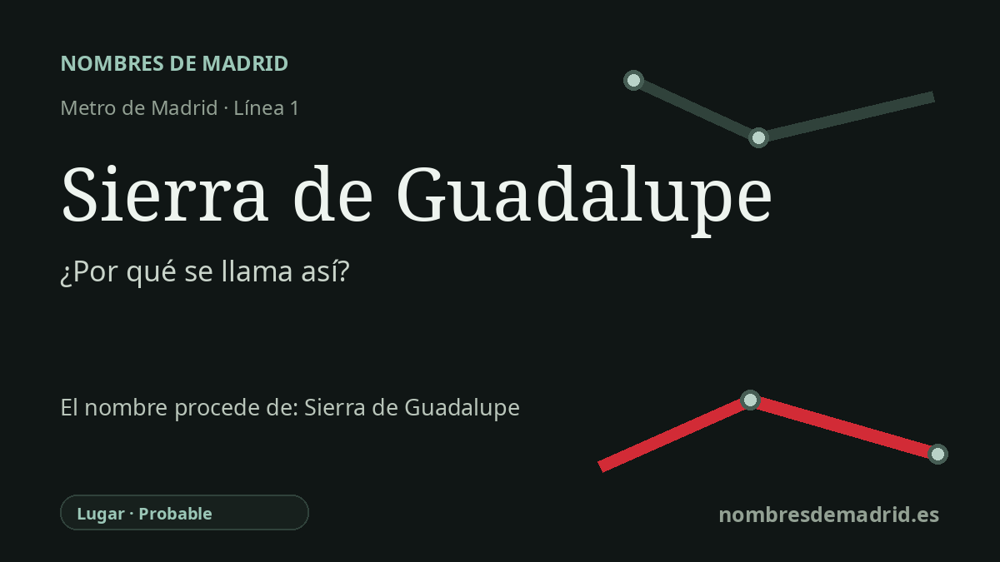

Publicado el · Investigación de Nombres de Madrid · Cómo verificamos cada origen · 7 fuentes consultadas
Respuesta rápida
La estación de Sierra de Guadalupe toma su nombre de la cercana calle de la Sierra de Guadalupe. Esa vía madrileña conserva el nombre del paisaje serrano de Guadalupe/Villuercas, en Cáceres, vinculado históricamente a la villa y al monasterio de Guadalupe.
La historia del nombre
El nombre de la estación es primero local y después histórico: **Sierra de Guadalupe** toma su identidad pública de la calle y del entorno del intercambiador de la calle de la Sierra de Guadalupe, en Villa de Vallecas. El Callejero histórico oficial de Madrid registra esa vía en el distrito desde el 28 de mayo de 1952, y la documentación regional de la ampliación de la línea 1 identifica Sierra de Guadalupe como una de las tres estaciones nuevas del tramo Miguel Hernández-Congosto.
Detrás del nombre de la calle madrileña hay un topónimo de montaña extremeño. La sierra de Guadalupe se asocia habitualmente con la sierra de las Villuercas, en la provincia de Cáceres, un paisaje serrano en torno a la villa de Guadalupe. En la explicación pública, el nombre evoca tanto una sierra como la geografía histórica y devocional de Guadalupe.
Esa asociación se hizo célebre por el Real Monasterio de Santa María de Guadalupe. Fuentes oficiales de turismo y de la UNESCO sitúan el monasterio en Cáceres y lo relacionan con Alfonso XI, el siglo XIV, la batalla del Salado de 1340, las peregrinaciones y una larga historia arquitectónica. La tradición de la imagen de la Virgen y del pastor Gil Cordero pertenece a ese universo guadalupense, pero conviene presentarla como leyenda, no como origen documental del nombre de la estación.
En la historia del transporte, la estación forma parte de la ampliación de la línea 1 hacia Villa de Vallecas a finales de los años noventa. Una cronología de la red de Metro de Madrid de 2025 incluye el tramo Miguel Hernández-Congosto, con Sierra de Guadalupe, Villa de Vallecas y Congosto, como inaugurado el 3 de marzo de 1999. La documentación de la Comunidad de Madrid también indica que se trasladó la estación de Cercanías para crear el intercambiador con Metro en Sierra de Guadalupe.
La etimología, por tanto, es sólida en el nivel de la estación, pero más matizada en el nivel de la palabra. El referente inmediato es una calle madrileña y un topónimo serrano; el término antiguo **Guadalupe** sigue discutido por la toponimia, con el árabe *wadi* 'río' como primer elemento ampliamente aceptado y varias explicaciones para el segundo. Para una cartela pública, la formulación más prudente es que la estación toma el nombre de la calle cercana, que a su vez alude a la sierra extremeña de Guadalupe/Villuercas.